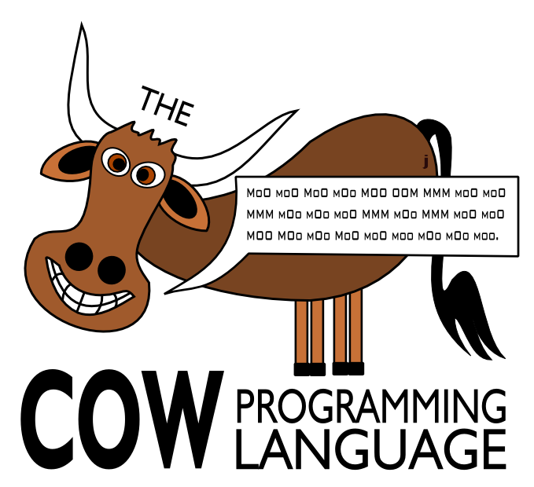

Other Languages:
COW | Whirl | 3code | Taxi
Other Languages:
COW | Whirl | 3code | Taxi

Note: If you like COW, you may also enjoy my other languages, check out the links at the top of this page!
The COW programming language was designed with the bovine in mind. Given that cows have somewhat limited vocabulary skills, it seemed natural to incorporate only the words they know into the language. As a result, all instructions are some variation on "moo" which just so happens to be the only word they really understand.
Any other word or symbol that isn't an instruction is ignored entirely. So, spaces can be used or not. Newlines can be used or not. You get the idea. It makes commenting COW programs rather easy as long as you don't use any words that have an instruction embedded in it. All instructions are case-sensitive.
The commands are as follows:| Code | Instruction | Description |
| 0 | moo | This command is connected to the MOO command. When encountered during normal execution, it searches the program code in reverse looking for a matching MOO command and begins executing again starting from the found MOO command. When searching, it skips the instruction that is immediately before it (see MOO). |
| 1 | mOo | Moves current memory position back one block. |
| 2 | moO | Moves current memory position forward one block. |
| 3 | mOO | Execute value in current memory block as if it were an instruction. The command executed is based on the instruction code value (for example, if the current memory block contains a 2, then the moO command is executed). An invalid command exits the running program. Value 3 is invalid as it would cause an infinite loop. |
| 4 | Moo | If current memory block has a 0 in it, read a single ASCII character from STDIN and store it in the current memory block. If the current memory block is not 0, then print the ASCII character that corresponds to the value in the current memory block to STDOUT. |
| 5 | MOo | Decrement current memory block value by 1. |
| 6 | MoO | Increment current memory block value by 1. |
| 7 | MOO | If current memory block value is 0, skip next command and resume execution after the next matching moo command. If current memory block value is not 0, then continue with next command. Note that the fact that it skips the command immediately following it has interesting ramifications for where the matching moo command really is. For example, the following will match the second and not the first moo: OOO MOO moo moo |
| 8 | OOO | Set current memory block value to 0. |
| 9 | MMM | If no current value in register, copy current memory block value. If there is a value in the register, then paste that value into the current memory block and clear the register. |
| 10 | OOM | Print value of current memory block to STDOUT as an integer. |
| 11 | oom | Read an integer from STDIN and put it into the current memory block. |
OOO MOo mOO
MOO MOo [[ anything in here happens "current" number of times ]] moo
MMM moO MMM
MMM moO MMM MOO MOo [[ move back so original current is current again ]] mOo [[ loop here ]] [[ move forward so the loop continutes to work on the temp counter ]] moO moo
[[ copy current to temp block ]] MMM moO MMM [[ copy 3 into another new temp block ]] moO OOO MoO MoO MoO [[ loop 3 times (the 3 is still current) ]] [[ this also decrements the temp value ]] MOO MOo mOo MOo moO moo [[ move back to first temp value (the copy of the current value) and check if 0 ]] mOo MOO [[ make original current current again ]] mOo OOM [[ gets here if != 3 ]] [[ skip down to the bottom past the if ]] moO OOO MOO moo [[ make original current current again ]] mOo OOM [[ gets here if == 3 ]] [[ skip down to the bottom of the if ]] moO OOO MOO moo moo [[ set current back ]] mOo [[ all execution resumes here ]]
MoO moO MoO mOo [[ main loop ]] MOO [[ print first number ]] OOM [[ temp copy of first number ]] MMM moO moO MMM mOo mOo [[ store second number off in the first position now ]] moO MMM mOo MMM [[ move back to temp number ]] moO moO [[ use temp to add to first and store in second in loop ]] MOO MOo mOo MoO moO moo mOo mOo moo
/; ;\
__ \\____//
/{_\_/ `'\____
\___ (o) (o }
_____________________________/ :--'
,-,'`@@@@@@@@ @@@@@@ \_ `__\
;:( @@@@@@@@@ @@@ \___(o'o)
:: ) @@@@ @@@@@@ ,'@@( `====' Moo!
:: : @@@@@: @@@@ `@@@:
:: \ @@@@@: @@@@@@@) ( '@@@'
;; /\ /`, @@@@@@@@@\ :@@@@@)
::/ ) {_----------------: :~`,~~;
;;'`; : ) : / `; ;
;;;; : : ; : ; ; :
`'`' / : : : : : :
)_ \__; ";" :_ ; \_\ `,','
:__\ \ * `,'* \ \ : \ * 8`;'* *
` ` ` `^' ` ` \ :/ ` ` ` ` ` `^' `-^-' ` \v/ `: \/
|